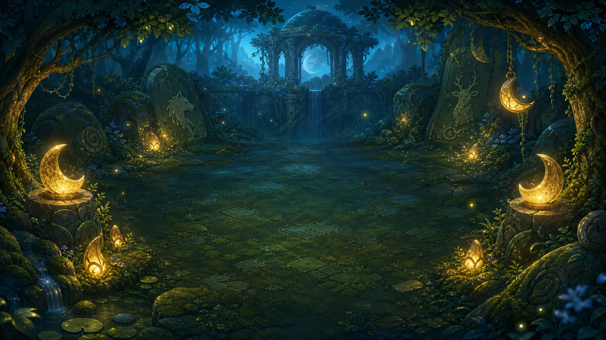

The satisfying part of Animal 2048 is the merge. The move that saves the board is often the one that does not merge anything at all.

Every swipe moves the whole grid. Matching animals merge once into the next tier, and a changed move adds another low-tier animal. That means a good-looking merge can still be a bad decision if it leaves no room for the next turn.
Space is the real resource
When I play a board like this, the first instinct is to chase the largest visible merge. Animal 2048 keeps asking a less exciting question: “Where will the next animal go?”
A move that keeps a corner stable, opens a lane, or preserves two empty cells may not produce a dramatic animation. It can still be the move that keeps the mission alive.
Not every move needs a reward
We wanted the game to make room for preparation. Some turns are about setting up a later merge rather than collecting points immediately. That creates a useful tension: move too cautiously and the target stays out of reach; move too greedily and the board closes around you.
The 30 campaign missions build on that idea with blocked cells, chain reactions, score goals, rare-animal nests, and different evolution targets. A new mission should change what the player protects, not just add more tiles.
Undo makes failure informative
Undo restores the previous board, score, move count, objective state, and spawn state. That matters because a retry should teach something specific. If the board changes randomly after every mistake, it is hard to tell whether the new plan was better.
Hints are useful too, but they should remain a nudge rather than a replacement for reading the board. The player still needs to notice why a direction is safer.
A quick test for your own puzzle
If you are making a grid game, try asking:
- Does the player understand what space needs protecting?
- Does a quiet setup move have a meaningful purpose?
- After failure, does the next attempt contain new information?
Animal 2048 is built around a simple rule, but the interesting decisions live in the gaps between the tiles. The empty square is not doing nothing. It is holding the future of the board. 🦉
This article was outlined with AI assistance and then checked and edited against the actual WeightPlay project by the WeightStudio team.